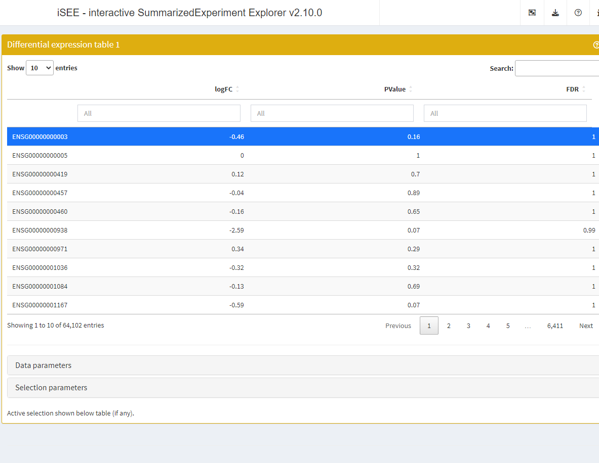
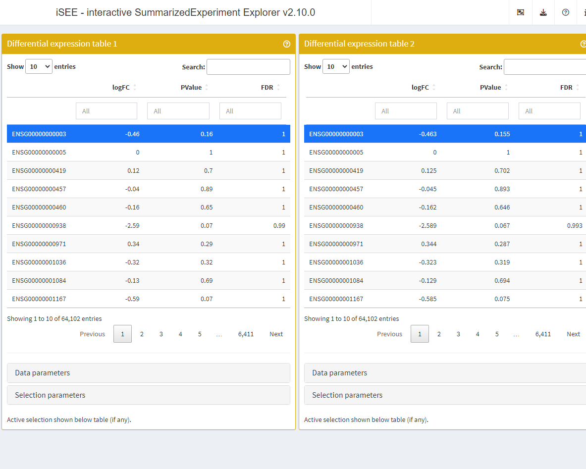

vignettes/rounding.Rmd
rounding.RmdIn this example, we use the ?airway data set.
We briefly adjust the reference level of the treatment factor to the untreated condition.
To generate some example results, we run a standard edgeR
analysis using glmFit() and glmLRT().
The differential expression results are fetched using
topTags().
library("edgeR")
design <- model.matrix(~ 0 + dex + cell, data = colData(airway))
fit <- glmFit(airway, design, dispersion = 0.1)
lrt <- glmLRT(fit, contrast = c(-1, 1, 0, 0, 0))
res_edger <- topTags(lrt, n = Inf)
head(res_edger)
#> Coefficient: -1*dexuntrt 1*dextrt
#> gene_id gene_name entrezid gene_biotype gene_seq_start
#> ENSG00000109906 ENSG00000109906 ZBTB16 NA protein_coding 113930315
#> ENSG00000179593 ENSG00000179593 ALOX15B NA protein_coding 7942335
#> ENSG00000127954 ENSG00000127954 STEAP4 NA protein_coding 87905744
#> ENSG00000152583 ENSG00000152583 SPARCL1 NA protein_coding 88394487
#> ENSG00000250978 ENSG00000250978 RP11-357D18.1 NA processed_transcript 66759637
#> ENSG00000163884 ENSG00000163884 KLF15 NA protein_coding 126061478
#> gene_seq_end seq_name seq_strand seq_coord_system symbol logFC logCPM
#> ENSG00000109906 114121398 11 1 NA ZBTB16 7.183385 4.132638
#> ENSG00000179593 7952452 17 1 NA ALOX15B 10.015847 1.627629
#> ENSG00000127954 87936206 7 -1 NA STEAP4 5.087069 3.672567
#> ENSG00000152583 88452213 4 -1 NA SPARCL1 4.498698 5.510213
#> ENSG00000250978 66771420 5 -1 NA RP11-357D18.1 6.128131 1.377260
#> ENSG00000163884 126076285 3 -1 NA KLF15 4.367962 4.681216
#> LR PValue FDR
#> ENSG00000109906 238.3947 8.805179e-54 5.606874e-49
#> ENSG00000179593 181.0331 2.883024e-41 9.179116e-37
#> ENSG00000127954 146.9725 7.957020e-34 1.688931e-29
#> ENSG00000152583 140.2205 2.382274e-32 3.792402e-28
#> ENSG00000250978 137.4681 9.526183e-32 1.213198e-27
#> ENSG00000163884 129.2203 6.069471e-30 6.441428e-26Then, we embed this set of differential expression results in the
airway object using the embedContrastResults()
method.
The results embedded in the airway object can be accessed using the
contrastResults() function.
library(iSEEde)
airway <- embedContrastResults(res_edger, airway, name = "edgeR")
contrastResults(airway)
#> DataFrame with 63677 rows and 1 column
#> edgeR
#> <iSEEedgeRResults>
#> ENSG00000000003 <iSEEedgeRResults>
#> ENSG00000000005 <iSEEedgeRResults>
#> ENSG00000000419 <iSEEedgeRResults>
#> ENSG00000000457 <iSEEedgeRResults>
#> ENSG00000000460 <iSEEedgeRResults>
#> ... ...
#> ENSG00000273489 <iSEEedgeRResults>
#> ENSG00000273490 <iSEEedgeRResults>
#> ENSG00000273491 <iSEEedgeRResults>
#> ENSG00000273492 <iSEEedgeRResults>
#> ENSG00000273493 <iSEEedgeRResults>
contrastResults(airway, "edgeR")
#> iSEEedgeRResults with 63677 rows and 5 columns
#> logFC logCPM LR PValue FDR
#> <numeric> <numeric> <numeric> <numeric> <numeric>
#> ENSG00000000003 -0.4628153 5.05930 2.018481 0.155394 1
#> ENSG00000000005 0.0000000 -3.45546 0.000000 1.000000 1
#> ENSG00000000419 0.1247724 4.60783 0.146545 0.701860 1
#> ENSG00000000457 -0.0445216 3.48326 0.018241 0.892565 1
#> ENSG00000000460 -0.1618126 1.48518 0.210342 0.646500 1
#> ... ... ... ... ... ...
#> ENSG00000273489 2.48209 -3.28549 3.02143 0.082171 1
#> ENSG00000273490 0.00000 -3.45546 0.00000 1.000000 1
#> ENSG00000273491 0.00000 -3.45546 0.00000 1.000000 1
#> ENSG00000273492 -1.24012 -3.36894 0.91097 0.339857 1
#> ENSG00000273493 -1.75243 -3.36862 1.57193 0.209928 1Differential expression methods generally return precise numeric values with several digits after the decimal point. This level of precision can be unnecessarily overwhelming and users may wish to round numeric values to a limited number of significant digits.
The builtin default configuration for rounding in iSEEde is
RoundDigit = FALSE and SignifDigits = 3. In
other words, numeric values are not rounded, and if users do activate
the rounding functionality, numeric values are rounded to three
significant digits.
Those defaults can be changed using the panelDefaults()
function.
panelDefaults(RoundDigits = TRUE, SignifDigits = 2L)With the default panel settings configured, we use the
DETable() function to display the contrast results with
rounded numeric values.
library(iSEE)
app <- iSEE(airway, initial = list(
DETable(ContrastName="edgeR", HiddenColumns = c("logCPM", "LR"),
PanelWidth = 12L)
))
if (interactive()) {
shiny::runApp(app)
}
The default rounding configuration can be overridden in individual panel configurations.
The slots RoundDigits and SignifDigits can
be set directly in the individual calls to the DETable()
constructor function.
In the example below, we add two tables, one rounding numeric values to the default value of two significant digits set above, the other rounding the same values to three significant digits.
library(iSEE)
app <- iSEE(airway, initial = list(
DETable(ContrastName="edgeR", HiddenColumns = c("logCPM", "LR"),
PanelWidth = 6L, RoundDigits = TRUE),
DETable(ContrastName="edgeR", HiddenColumns = c("logCPM", "LR"),
PanelWidth = 6L, RoundDigits = TRUE, SignifDigits = 3L)
))
if (interactive()) {
shiny::runApp(app)
}
The iSEEde package (Rue-Albrecht, 2022) was made possible thanks to:
This package was developed using biocthis.
Code for creating the vignette
## Create the vignette
library("rmarkdown")
system.time(render("rounding.Rmd", "BiocStyle::html_document"))
## Extract the R code
library("knitr")
knit("rounding.Rmd", tangle = TRUE)Date the vignette was generated.
#> [1] "2023-05-18 12:26:37 UTC"Wallclock time spent generating the vignette.
#> Time difference of 23.026 secsR session information.
#> ─ Session info ───────────────────────────────────────────────────────────────────────────────────────────────────────
#> setting value
#> version R version 4.3.0 (2023-04-21)
#> os Ubuntu 22.04.2 LTS
#> system x86_64, linux-gnu
#> ui X11
#> language en
#> collate en_US.UTF-8
#> ctype en_US.UTF-8
#> tz UTC
#> date 2023-05-18
#> pandoc 2.19.2 @ /usr/local/bin/ (via rmarkdown)
#>
#> ─ Packages ───────────────────────────────────────────────────────────────────────────────────────────────────────────
#> package * version date (UTC) lib source
#> airway * 1.20.0 2023-04-27 [1] Bioconductor
#> backports 1.4.1 2021-12-13 [1] CRAN (R 4.3.0)
#> bibtex 0.5.1 2023-01-26 [1] CRAN (R 4.3.0)
#> Biobase * 2.60.0 2023-04-25 [1] Bioconductor
#> BiocGenerics * 0.46.0 2023-04-25 [1] Bioconductor
#> BiocManager 1.30.20 2023-02-24 [2] CRAN (R 4.3.0)
#> BiocParallel 1.34.1 2023-05-05 [1] Bioconductor
#> BiocStyle * 2.28.0 2023-04-25 [1] Bioconductor
#> bitops 1.0-7 2021-04-24 [1] CRAN (R 4.3.0)
#> bookdown 0.34 2023-05-09 [1] CRAN (R 4.3.0)
#> bslib 0.4.2 2022-12-16 [2] CRAN (R 4.3.0)
#> cachem 1.0.8 2023-05-01 [2] CRAN (R 4.3.0)
#> circlize 0.4.15 2022-05-10 [1] CRAN (R 4.3.0)
#> cli 3.6.1 2023-03-23 [2] CRAN (R 4.3.0)
#> clue 0.3-64 2023-01-31 [1] CRAN (R 4.3.0)
#> cluster 2.1.4 2022-08-22 [3] CRAN (R 4.3.0)
#> codetools 0.2-19 2023-02-01 [3] CRAN (R 4.3.0)
#> colorspace 2.1-0 2023-01-23 [1] CRAN (R 4.3.0)
#> colourpicker 1.2.0 2022-10-28 [1] CRAN (R 4.3.0)
#> ComplexHeatmap 2.16.0 2023-04-25 [1] Bioconductor
#> crayon 1.5.2 2022-09-29 [2] CRAN (R 4.3.0)
#> DelayedArray 0.26.2 2023-05-05 [1] Bioconductor
#> desc 1.4.2 2022-09-08 [2] CRAN (R 4.3.0)
#> DESeq2 1.40.1 2023-05-02 [1] Bioconductor
#> digest 0.6.31 2022-12-11 [2] CRAN (R 4.3.0)
#> doParallel 1.0.17 2022-02-07 [1] CRAN (R 4.3.0)
#> dplyr 1.1.2 2023-04-20 [1] CRAN (R 4.3.0)
#> DT 0.27 2023-01-17 [1] CRAN (R 4.3.0)
#> edgeR * 3.42.2 2023-05-02 [1] Bioconductor
#> ellipsis 0.3.2 2021-04-29 [2] CRAN (R 4.3.0)
#> evaluate 0.21 2023-05-05 [2] CRAN (R 4.3.0)
#> fansi 1.0.4 2023-01-22 [2] CRAN (R 4.3.0)
#> fastmap 1.1.1 2023-02-24 [2] CRAN (R 4.3.0)
#> fontawesome 0.5.1 2023-04-18 [2] CRAN (R 4.3.0)
#> foreach 1.5.2 2022-02-02 [1] CRAN (R 4.3.0)
#> fs 1.6.2 2023-04-25 [2] CRAN (R 4.3.0)
#> generics 0.1.3 2022-07-05 [1] CRAN (R 4.3.0)
#> GenomeInfoDb * 1.36.0 2023-04-25 [1] Bioconductor
#> GenomeInfoDbData 1.2.10 2023-05-18 [1] Bioconductor
#> GenomicRanges * 1.52.0 2023-04-25 [1] Bioconductor
#> GetoptLong 1.0.5 2020-12-15 [1] CRAN (R 4.3.0)
#> ggplot2 3.4.2 2023-04-03 [1] CRAN (R 4.3.0)
#> ggrepel 0.9.3 2023-02-03 [1] CRAN (R 4.3.0)
#> GlobalOptions 0.1.2 2020-06-10 [1] CRAN (R 4.3.0)
#> glue 1.6.2 2022-02-24 [2] CRAN (R 4.3.0)
#> gtable 0.3.3 2023-03-21 [1] CRAN (R 4.3.0)
#> highr 0.10 2022-12-22 [2] CRAN (R 4.3.0)
#> htmltools 0.5.5 2023-03-23 [2] CRAN (R 4.3.0)
#> htmlwidgets 1.6.2 2023-03-17 [2] CRAN (R 4.3.0)
#> httpuv 1.6.11 2023-05-11 [2] CRAN (R 4.3.0)
#> httr 1.4.6 2023-05-08 [2] CRAN (R 4.3.0)
#> igraph 1.4.2 2023-04-07 [1] CRAN (R 4.3.0)
#> IRanges * 2.34.0 2023-04-25 [1] Bioconductor
#> iSEE * 2.12.0 2023-04-25 [1] Bioconductor
#> iSEEde * 0.99.0 2023-05-18 [1] Bioconductor
#> iterators 1.0.14 2022-02-05 [1] CRAN (R 4.3.0)
#> jquerylib 0.1.4 2021-04-26 [2] CRAN (R 4.3.0)
#> jsonlite 1.8.4 2022-12-06 [2] CRAN (R 4.3.0)
#> knitr 1.42 2023-01-25 [2] CRAN (R 4.3.0)
#> later 1.3.1 2023-05-02 [2] CRAN (R 4.3.0)
#> lattice 0.21-8 2023-04-05 [3] CRAN (R 4.3.0)
#> lifecycle 1.0.3 2022-10-07 [2] CRAN (R 4.3.0)
#> limma * 3.56.1 2023-05-07 [1] Bioconductor
#> locfit 1.5-9.7 2023-01-02 [1] CRAN (R 4.3.0)
#> lubridate 1.9.2 2023-02-10 [1] CRAN (R 4.3.0)
#> magrittr 2.0.3 2022-03-30 [2] CRAN (R 4.3.0)
#> Matrix 1.5-4.1 2023-05-18 [1] CRAN (R 4.3.0)
#> MatrixGenerics * 1.12.0 2023-04-25 [1] Bioconductor
#> matrixStats * 0.63.0 2022-11-18 [1] CRAN (R 4.3.0)
#> memoise 2.0.1 2021-11-26 [2] CRAN (R 4.3.0)
#> mgcv 1.8-42 2023-03-02 [3] CRAN (R 4.3.0)
#> mime 0.12 2021-09-28 [2] CRAN (R 4.3.0)
#> miniUI 0.1.1.1 2018-05-18 [2] CRAN (R 4.3.0)
#> munsell 0.5.0 2018-06-12 [1] CRAN (R 4.3.0)
#> nlme 3.1-162 2023-01-31 [3] CRAN (R 4.3.0)
#> pillar 1.9.0 2023-03-22 [2] CRAN (R 4.3.0)
#> pkgconfig 2.0.3 2019-09-22 [2] CRAN (R 4.3.0)
#> pkgdown 2.0.7 2022-12-14 [2] CRAN (R 4.3.0)
#> plyr 1.8.8 2022-11-11 [1] CRAN (R 4.3.0)
#> png 0.1-8 2022-11-29 [1] CRAN (R 4.3.0)
#> promises 1.2.0.1 2021-02-11 [2] CRAN (R 4.3.0)
#> purrr 1.0.1 2023-01-10 [2] CRAN (R 4.3.0)
#> R6 2.5.1 2021-08-19 [2] CRAN (R 4.3.0)
#> ragg 1.2.5 2023-01-12 [2] CRAN (R 4.3.0)
#> RColorBrewer 1.1-3 2022-04-03 [1] CRAN (R 4.3.0)
#> Rcpp 1.0.10 2023-01-22 [2] CRAN (R 4.3.0)
#> RCurl 1.98-1.12 2023-03-27 [1] CRAN (R 4.3.0)
#> RefManageR * 1.4.0 2022-09-30 [1] CRAN (R 4.3.0)
#> rintrojs 0.3.2 2022-08-09 [1] CRAN (R 4.3.0)
#> rjson 0.2.21 2022-01-09 [1] CRAN (R 4.3.0)
#> rlang 1.1.1 2023-04-28 [2] CRAN (R 4.3.0)
#> rmarkdown 2.21 2023-03-26 [2] CRAN (R 4.3.0)
#> rprojroot 2.0.3 2022-04-02 [2] CRAN (R 4.3.0)
#> S4Arrays 1.0.4 2023-05-14 [1] Bioconductor
#> S4Vectors * 0.38.1 2023-05-02 [1] Bioconductor
#> sass 0.4.6 2023-05-03 [2] CRAN (R 4.3.0)
#> scales 1.2.1 2022-08-20 [1] CRAN (R 4.3.0)
#> sessioninfo * 1.2.2 2021-12-06 [2] CRAN (R 4.3.0)
#> shape 1.4.6 2021-05-19 [1] CRAN (R 4.3.0)
#> shiny 1.7.4 2022-12-15 [2] CRAN (R 4.3.0)
#> shinyAce 0.4.2 2022-05-06 [1] CRAN (R 4.3.0)
#> shinydashboard 0.7.2 2021-09-30 [1] CRAN (R 4.3.0)
#> shinyjs 2.1.0 2021-12-23 [1] CRAN (R 4.3.0)
#> shinyWidgets 0.7.6 2023-01-08 [1] CRAN (R 4.3.0)
#> SingleCellExperiment * 1.22.0 2023-04-25 [1] Bioconductor
#> stringi 1.7.12 2023-01-11 [2] CRAN (R 4.3.0)
#> stringr 1.5.0 2022-12-02 [2] CRAN (R 4.3.0)
#> SummarizedExperiment * 1.30.1 2023-05-01 [1] Bioconductor
#> systemfonts 1.0.4 2022-02-11 [2] CRAN (R 4.3.0)
#> textshaping 0.3.6 2021-10-13 [2] CRAN (R 4.3.0)
#> tibble 3.2.1 2023-03-20 [2] CRAN (R 4.3.0)
#> tidyselect 1.2.0 2022-10-10 [1] CRAN (R 4.3.0)
#> timechange 0.2.0 2023-01-11 [1] CRAN (R 4.3.0)
#> utf8 1.2.3 2023-01-31 [2] CRAN (R 4.3.0)
#> vctrs 0.6.2 2023-04-19 [2] CRAN (R 4.3.0)
#> vipor 0.4.5 2017-03-22 [1] CRAN (R 4.3.0)
#> viridisLite 0.4.2 2023-05-02 [1] CRAN (R 4.3.0)
#> xfun 0.39 2023-04-20 [2] CRAN (R 4.3.0)
#> xml2 1.3.4 2023-04-27 [2] CRAN (R 4.3.0)
#> xtable 1.8-4 2019-04-21 [2] CRAN (R 4.3.0)
#> XVector 0.40.0 2023-04-25 [1] Bioconductor
#> yaml 2.3.7 2023-01-23 [2] CRAN (R 4.3.0)
#> zlibbioc 1.46.0 2023-04-25 [1] Bioconductor
#>
#> [1] /__w/_temp/Library
#> [2] /usr/local/lib/R/site-library
#> [3] /usr/local/lib/R/library
#>
#> ──────────────────────────────────────────────────────────────────────────────────────────────────────────────────────This vignette was generated using BiocStyle
r Citep(bib[["BiocStyle"]]) with knitr (Xie,
2023) and rmarkdown
(Allaire, Xie, Dervieux et al., 2023) running behind the scenes.
Citations made with RefManageR (McLean, 2017).
[1] J. Allaire, Y. Xie, C. Dervieux, et al. rmarkdown: Dynamic Documents for R. R package version 2.21. 2023. URL: https://github.com/rstudio/rmarkdown.
[2] M. W. McLean. “RefManageR: Import and Manage BibTeX and BibLaTeX References in R”. In: The Journal of Open Source Software (2017). DOI: 10.21105/joss.00338.
[3] A. Oleś. BiocStyle: Standard styles for vignettes and other Bioconductor documents. R package version 2.28.0. 2023. DOI: 10.18129/B9.bioc.BiocStyle. URL: https://bioconductor.org/packages/BiocStyle.
[4] R Core Team. R: A Language and Environment for Statistical Computing. R Foundation for Statistical Computing. Vienna, Austria, 2023. URL: https://www.R-project.org/.
[5] K. Rue-Albrecht. iSEEde: iSEE extension for panels related to differential expression analysis. R package version 0.99.0. 2022. URL: https://github.com/iSEE/iSEEde.
[6] H. Wickham. “testthat: Get Started with Testing”. In: The R Journal 3 (2011), pp. 5–10. URL: https://journal.r-project.org/archive/2011-1/RJournal_2011-1_Wickham.pdf.
[7] H. Wickham, W. Chang, R. Flight, et al. sessioninfo: R Session Information. R package version 1.2.2. 2021. URL: https://CRAN.R-project.org/package=sessioninfo.
[8] Y. Xie. knitr: A General-Purpose Package for Dynamic Report Generation in R. R package version 1.42. 2023. URL: https://yihui.org/knitr/.